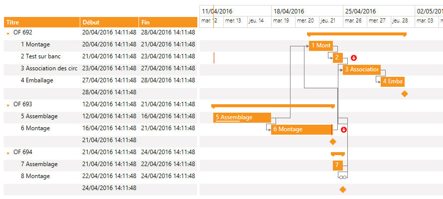
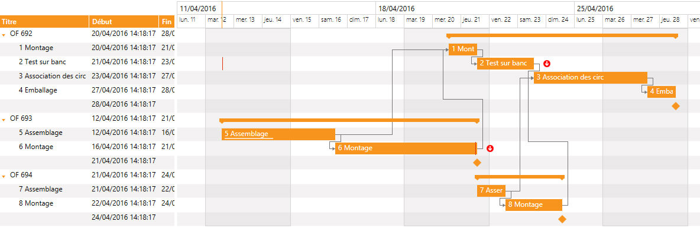

Les filtres
Il est possible de redéfinir les jours affichés par l'objet Gantt.
Pour cela, il faut donner le jour de début (par exemple lundi) et combien de jours afficher à partir de ce jour (par exemple 5).
C'est forcément une suite continue de jours. On ne peut pas afficher par exemple, le lundi mardi jeudi vendredi.
Par défaut, il n'y a pas de filtre.
Pour le mettre en place, il faut ajouter l'option GANTT_OPT_TIMELINE_FILTERING avec la valeur GANTT_FILTERING_WEEK_DAYS.
A partir de là, le filtre va utiliser les valeurs par défaut qui sont Lundi et 5 jours (masquer le weekend).
Pour changer cela, il suffit de positionner l'option GANTT_OPT_FILTERING_FIRST_DAY à une autre valeur (GANTT_WEEK_DAYS_*) et l'option GANTT_OPT_FILTERING_DAYS_COUNT au nombre de jours à afficher.
Pour revenir au filtre par défaut, il faut positionner l'option GANTT_OPT_TIMELINE_FILTERING à la valeur GANTT_FILTERING_DEFAULT.
Exemple :
Opt.Option = GANTT_OPT_TIMELINE_FILTERING
Opt.OptValue = GANTT_FILTERING_WEEK_DAYS
XmeGanttSetOption(IdGantt, Opt)
Opt.Option = GANTT_OPT_FILTERING_DAYS_COUNT
Opt.OptValue = 3
XmeGanttSetOption(IdGantt, Opt)
Opt.Option = GANTT_OPT_FILTERING_FIRST_DAY
Opt.OptValue = GANTT_WEEK_DAYS_TUESDAY
XmeGanttSetOption(IdGantt, Opt)
Ce code affiche 3 jours à partir de mardi :

Les zones spéciales
Remarque : les zones spéciales ne sont pas disponibles dans le client léger HTML5.
Les zones spéciales permettent de griser certains jours.
Le fonctionnement est identique aux filtres.
Seul le nom des options diffère : GANTT_OPT_SPECIAL_SLOTS, GANTT_OPT_SPECIAL_SLOTS_FIRST_DAY, GANTT_OPT_SPECIAL_SLOTS_DAYS_COUNT, GANTT_OPT_SPECIAL_SLOTS_DEFAULT.
Exemple :
Opt.Option = GANTT_OPT_SPECIAL_SLOTS
Opt.OptValue = GANTT_SPECIAL_SLOTS_WEEK_DAYS
XmeGanttSetOption(IdGantt, Opt)
Opt.Option = GANTT_OPT_SPECIAL_SLOTS_DAYS_COUNT
Opt.OptValue = 3
XmeGanttSetOption(IdGantt, Opt)
Opt.Option = GANTT_OPT_SPECIAL_SLOTS_FIRST_DAY
Opt.OptValue = GANTT_WEEK_DAYS_TUESDAY
XmeGanttSetOption(IdGantt, Opt)
Ce code grise 3 jours à partir de mardi :

Voir l'exemple de programmation complet.